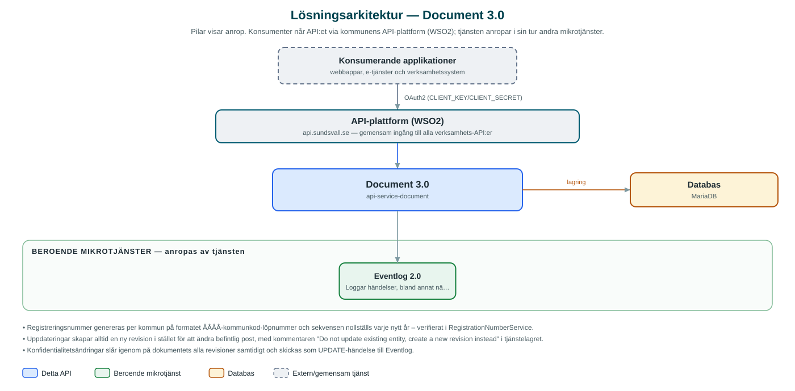

Document
Central dokumenttjänst där kommunens applikationer lagrar, versionerar och söker dokument med tillhörande filer och metadata.
Om API:et
Document är kommunens gemensamma lagringsplats för verksamhetsdokument. Applikationer skapar dokument med metadata och en eller flera filer, och varje dokument får ett unikt registreringsnummer på formatet ÅÅÅÅ-kommunkod-löpnummer, där löpnumret nollställs vid varje årsskifte.
Tjänsten är revisionsbaserad: en uppdatering av ett dokument skriver aldrig över befintlig data utan skapar i stället en ny revision, så att hela historiken kan läsas ut i efterhand. Dokument och enskilda filer kan markeras som konfidentiella, och läsande anrop måste uttryckligen begära att konfidentiellt material ska ingå för att få se det.
Utöver hämtning per registreringsnummer finns fritextsökning och parameterbaserad sökning med paginering, administration av dokumenttyper per kommun samt möjlighet att arkivmarkera dokument. Ändringar av konfidentialitet loggas till kommunens händelselogg via Eventlog.
Det här gör API:et
- Dokumentlagring med metadata – Dokument skapas med metadata och filer (upp till 60 MB per anrop) och får automatiskt ett unikt registreringsnummer per kommun och år.
- Revisionshantering – Varje uppdatering skapar en ny revision i stället för att skriva över – tidigare revisioner och deras filer kan läsas ut.
- Konfidentialitet – Dokument kan markeras som konfidentiella; läsande anrop får bara med konfidentiellt material om det uttryckligen begärs, och ändringar loggas till Eventlog.
- Sökning – Fritextsökning och parameterbaserad sökning med paginering och sortering, med möjlighet att begränsa till senaste revisionen.
- Filhantering – Filer kan läggas till, ersättas (samma filnamn ersätter befintlig fil) och laddas ner per dokument och revision.
- Dokumenttyper – Administrationsgränssnitt för att hantera vilka dokumenttyper som finns per kommun.
API-dokumentation
API:ets samtliga resurser, parametrar och datamodeller finns beskrivna i en OpenAPI-specifikation som är hämtad ur källkodsförrådet. Den kan utforskas interaktivt i Swagger UI eller laddas ner som YAML. Programvaruförteckningen (SBOM) listar tjänstens samtliga tredjepartskomponenter med version och licens.
Teknisk dokumentation
Nedan beskrivs hur tjänsten är uppbyggd, vilka andra tjänster den anropar och vad som krävs för att driftsätta den. Informationen är härledd ur källkoden och dess konfiguration på GitHub.
Arkitektur

API:et är en mikrotjänst (Java 25, Spring Boot via kommunens gemensamma tjänsteplattform dept44 (8.0.8), byggd med Maven). Konsumenter når tjänsten via kommunens gemensamma API-plattform (WSO2) på api.sundsvall.se – tjänsten anropas aldrig direkt. Tjänsten anropar i sin tur andra mikrotjänster i kommunens tjänstelandskap. Lagring: MariaDB med Flyway-migrationer; dokumentmetadata, revisioner och filernas binärdata lagras i databasen.
Teknikstack
- Språk: Java 25
- Ramverk: Spring Boot via kommunens gemensamma tjänsteplattform dept44 (8.0.8), byggd med Maven
- Databas: MariaDB med Flyway-migrationer; dokumentmetadata, revisioner och filernas binärdata lagras i databasen
- Övrigt: Feign-klient mot Eventlog, JPA/Hibernate för lagring, filinnehåll strömmas som BLOB:ar
Beroenden till andra mikrotjänster
Tjänsten anropar följande mikrotjänster. Versionerna är hämtade ur källkodens integrationsklienter.
| Tjänst | Version | Användning |
|---|---|---|
| Eventlog | 2.0 | Loggar händelser, bland annat när konfidentialitetsinställningar på ett dokument ändras. |
Programvaruförteckning
Tjänsten bygger på 256 tredjepartskomponenter fördelade på 13 olika licenser. Till skillnad från tabellen ovan, som listar andra mikrotjänster, avses här de programbibliotek som ingår i bygget. Se programvaruförteckningen för hela listan.
Konfiguration och driftsättning
- application.yml med URL och OAuth2-klientuppgifter för Eventlog-integrationen
- MariaDB-anslutning; databasschemat versionshanteras med Flyway (avstängt som standard, aktiveras per miljö)
- Maxstorlek för uppladdade filer är satt till 60 MB per fil och anrop
- Anrop görs per kommun – municipalityId ingår i alla API-vägar
Noterbart ur källkoden
- Registreringsnummer genereras per kommun på formatet ÅÅÅÅ-kommunkod-löpnummer och sekvensen nollställs varje nytt år – verifierat i RegistrationNumberService.
- Uppdateringar skapar alltid en ny revision i stället för att ändra befintlig post, med kommentaren "Do not update existing entity, create a new revision instead" i tjänstelagret.
- Konfidentialitetsändringar slår igenom på dokumentets alla revisioner samtidigt och skickas som UPDATE-händelse till Eventlog.
- Filinnehåll lagras som binärdata i databasen och strömmas direkt till HTTP-svaret vid nedladdning.
Källkod
Källkoden är öppen och finns hos Sundsvalls kommun på GitHub. I källkodsförrådet finns även instruktioner för att klona, konfigurera och starta tjänsten i egen miljö.